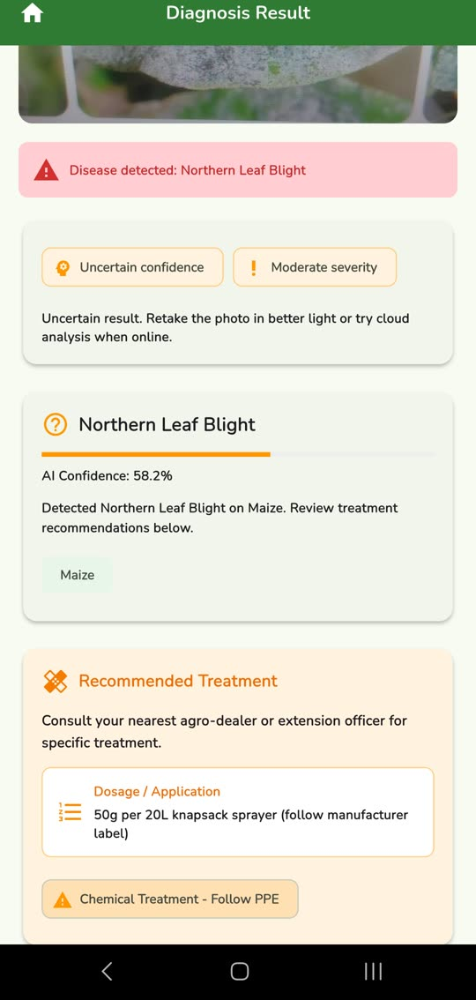
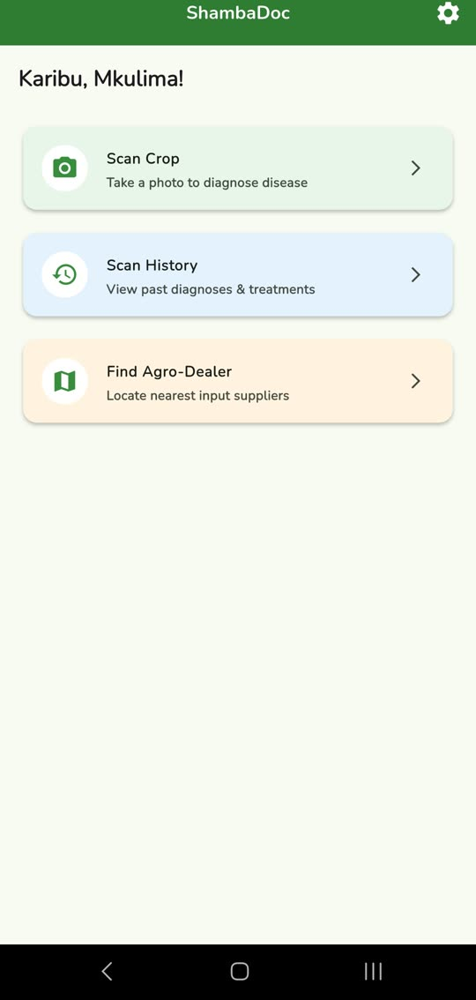

Systems that move money and hold records
All workWhere the teaching half of the practice happens
The hubWhat I build, and what I teach
Access and availabilitySystems that move money and hold records
All workWhere the teaching half of the practice happens
The hubWhat I build, and what I teach
Access and availabilityCrop disease diagnosis that runs on the phone, in Kiswahili, with no connection required.
A smallholder farmer notices something wrong with a maize leaf. The nearest extension officer is a bus ride away and may be booked for a week. By the time anyone with training sees the plant, the answer has stopped being useful, because the window in which a treatable disease is still treatable has closed.
The obvious fix is to photograph the leaf and ask a model. The obvious fix also assumes a data bundle, a signal, and an app that will not silently fail in a field an hour from the nearest tower. Every one of those assumptions is wrong often enough that an online-only tool is a tool that works in a demo and not on a farm.
The answer has to arrive while the farmer is still standing in front of the plant.
Point the camera at an affected leaf. The diagnosis happens on the device, in the time it takes to frame the shot, and it happens whether or not there is a connection. If the model is not confident enough in its own answer, and only then, it offers to ask a stronger cloud service instead.
The classifier is a MobileNetV2 quantised down to two and a half megabytes and bundled with the application, so the first diagnosis works before the phone has ever had a connection. Quantisation costs a little accuracy and buys the only property that matters here, which is that the feature exists at all when there is no signal.
The confidence threshold is what makes that honest. Below seventy five percent the app does not guess and does not quietly present a weak answer as a strong one. It says the on-device result is uncertain and offers the cloud instead, which is a choice the farmer makes knowing it will cost data. Cloud is the fallback rather than the default, so a confident answer never spends money the farmer did not agree to spend.
The app is bilingual from the string files up. That sounds like a small distinction until you have used software where the interface switched language but the actual disease names, the treatment advice and the error messages all stayed in English, which is the part a farmer needed most.
This is the same argument as the offline model. A tool for people in this country either works in the language they use and on the connection they have, or it is a tool for somebody else that happens to have been aimed here.


The ShambaDoc prototype
The app is Flutter, one codebase for both platforms, with the inference running through TensorFlow Lite against the bundled model file. History lives in a local SQLite database so the app is fully usable with the radio off, and identity is Firebase phone authentication. The screens are organised by feature, scanning, history, map and settings, with localisation as its own layer rather than scattered through the widgets.
Behind it sits a Node API on PostgreSQL, deliberately thin. It logs scans for the outbreak map and mediates the Plant.id call and the agro dealer lookup through Google Maps, holding the keys so they never ship inside the app. The important design point is that the backend is optional to the core feature: if it is unreachable, diagnosis still works and the scan queues locally. Auth is verified twice, at the Firebase layer and again as a token on the API.
Every scan carries a location, which means the scans together are the beginning of a live map of what is spreading and where. That is worth considerably more to an agricultural office than any single diagnosis is worth to a single farmer, and it is the direction the data model was shaped for from the start.
The nearer work is duller and matters more. Four crops is not enough, the model needs retraining on images taken by the phones people actually own rather than on a clean research dataset, and the accuracy claim needs to be measured in a field rather than asserted from a validation split.